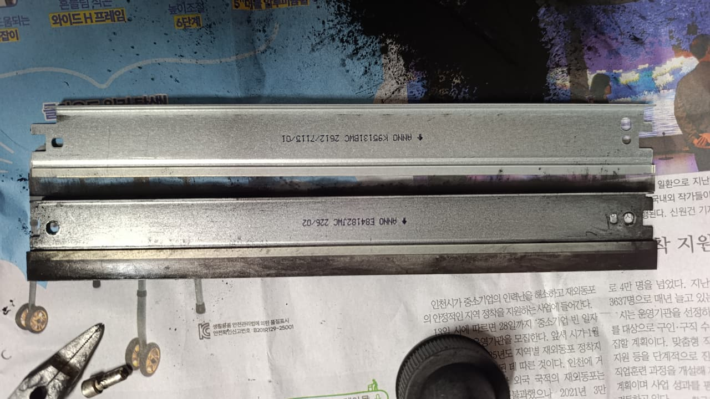

Máy in bị lem mực: thử chà tay lên chữ để biết lỗi ở đâu
Có một phép thử rất nhanh: in một trang, chờ vài giây rồi lấy ngón tay chà nhẹ lên chữ. Mực có bong ra hay không sẽ cho biết nên kiểm tra phần nào của máy.
Bản in của anh/chị bị lem kiểu nào?
Đặt tờ giấy của anh/chị cạnh các mẫu dưới đây. Hình mẫu là minh hoạ.
-
Chà tay là chữ bong, nhòe ra
Nguyên nhân: Bộ sấy không còn ép chặt mực vào giấy
Nên làm: Thử giấy khô trước, không hết thì cần thay bao lụa hoặc lô sấy
-
Lem khắp trang, nền bẩn dù chữ không bong
Nguyên nhân: Gạt mực đã mòn
Nên làm: Cần thay gạt mực
-
Lem theo một dải hoặc một bên
Nguyên nhân: Hộp mực rò hoặc nạp quá đầy
Nên làm: Lấy hộp ra kiểm tra mép hộp
-
Mặt sau tờ giấy bị dính mực
Nguyên nhân: Có mực rơi trên đường đi của giấy
Nên làm: In vài tờ trắng để giấy tự kéo sạch mực
-
Bản in nhòe như bị ẩm
Nguyên nhân: Giấy ẩm hoặc bộ sấy yếu
Nên làm: Đổi giấy mới, khô
Những việc anh/chị tự làm được
- Đổi giấy mới trong gói còn kín. Giấy để hở ở phòng máy lạnh hoặc gần cửa rất hay ẩm.
- Kiểm tra lại loại giấy trong cài đặt in. Giấy dày hoặc giấy nhãn in ở chế độ giấy thường thì mực hay bám kém.
- Tắt máy, chờ nguội, lấy hộp mực ra và đặt lên tờ giấy. Xem mép hộp có mực rò không, lau phần vỏ ngoài bằng khăn khô.
- Lắp lại rồi in 3 đến 5 tờ trắng để giấy kéo sạch phần mực rơi trong máy.
- In trang thử và làm lại phép chà tay.
Khi nào không nên tự làm tiếp
- Vẫn bong mực khi chà: đây là lỗi bộ sấy. Khu vực này rất nóng và khó tháo lắp, không nên tự mở.
- Mực rơi thành vệt trong máy: dừng in sớm để mực không bám thêm vào các trục. Đừng dùng máy hút bụi gia dụng để hút mực vì bột mực rất mịn.
- Mới nạp xong đã lem: nhiều khả năng nạp quá đầy hoặc gạt mực đã mòn từ trước. Báo lại nơi nạp kèm ảnh bản in.


Thử rồi vẫn chưa được?
Gọi hoặc gửi ảnh bản in qua Zalo, cửa hàng sẽ nói anh/chị biết nên làm gì tiếp theo và báo giá trước. Văn phòng, cửa hàng ở nội thành TP.HCM có nhiều máy thì nhắn danh sách dòng máy để cửa hàng sắp xếp một lượt. Có xuất hoá đơn VAT, bảo hành tính theo số trang in.
Gọi 0986 704 260 Gửi ảnh qua Zalo
Giá tham khảo
| Hạng mục | Giá |
|---|---|
| Gạt mực | 100.000 – 150.000đ |
| Bao lụa / lô sấy | 250.000 – 650.000đ |
| Hộp mực mới nguyên bộ | 320.000 – 850.000đ |
Giá chốt sau khi xem máy, anh/chị đồng ý thì mới làm.
Cửa hàng ở đâu
5/19 Phạm Hùng, Xã Bình Hưng, TP. Hồ Chí Minh. Mở chỉ đường trên Google Maps
Câu hỏi thường gặp
Dính mực ra tay hoặc quần áo thì xử lý sao?
Dùng nước lạnh và xà phòng. Không dùng nước nóng vì nhiệt làm bột mực bám chặt hơn.
Thay gạt mực có cần thay cả hộp không?
Không nhất thiết. Nếu vỏ hộp còn tốt và các chi tiết khác chưa mòn thì chỉ cần thay gạt mực. Khi vỏ hộp đã nạp quá 4 đến 5 lần thì nên tính tới hộp mới.